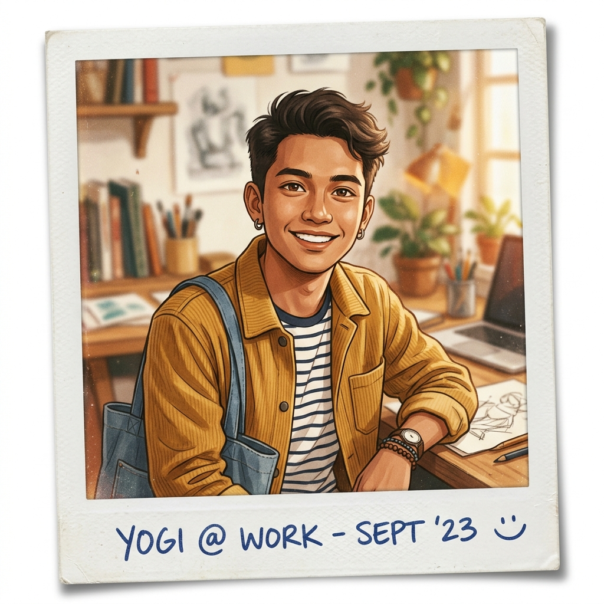

Dari bangku SMK menuju panggung PTN.
Ini bukan sekadar perjalanan — ini strategi.

Data autentik dari hasil tes UTBK SNBT 2026 — transparansi penuh, bukan rekayasa.
Setiap keputusan punya alasan. Ini adalah catatan jujur saya.
Menyelesaikan tes UTBK dengan skor kompetitif. Penalaran Umum dan Bahasa Inggris jadi kekuatan utama saya — berbekal latihan intensif dan strategi belajar mandiri.
Kabar gembira — diterima di UTY! Namun setelah mempertimbangkan dengan matang: tenggat waktu registrasi jatuh bulan ini, sementara target utama saya masih PTN. Mendaftar UTY sekarang berarti kehilangan peluang PTN — keputusan diambil: lewati UTY, fokus PTN.
Sudah membayar dan mendaftar jalur Mandiri CBT di UNY. UNY adalah target PTN utama saya — IT.
Strategi cerdas: jangan taruh semua telur dalam satu keranjang. Saya sedang mencari dan membandingkan PTN lain yang membuka jalur Mandiri dengan passing grade yang sesuai skor UTBK saya.
Dashboard mini berbasis data — peluang masuk, kualitas kampus, dan ranking nasional.
| Kampus | Chance Keterima | Kualitas (1-100) | Peringkat Nasional | Status |
|---|---|---|---|---|
| UNY Target | 72/100 | 82/100 | #8 | Terdaftar |
| UGM | 38/100 | 96/100 | #1 | Aspirasi |
| ISI Yogyakarta | 65/100 | 79/100 | Spesialis Seni | Dipertimbangkan |
| UNS Solo | 68/100 | 78/100 | #12 | Cadangan |
Jadwal aktual berdasarkan sumber resmi kampus. Hari ini: — pantau terus, deadline mendekat!
Gagal bukan akhir — ini strategi jitu jika PTN tidak berjalan sesuai rencana. Pilih jalur terbaik, tetap melaju.
Bangun portofolio & penghasilan sambil coba PTN lagi
Tetap kuliah — pilih PTS terbaik dengan ekosistem kreatif kuat